安装与更新
把插件安装到固定文件夹；以后通过更新器更新，并保留本地数据。
首次安装
下载完整安装包
打开 最新 Release，在 Assets 中下载
NIKKE-Workshop.zip。安装包已包含立绘和本地识别所需文件，无需另下素材。下载完整安装包 · 点击图片查看大图 完整解压到固定位置
解压后，选择能直接看到
manifest.json的文件夹。不要选择 ZIP 文件，也不要进入assets子目录。浏览器会持续读取这个文件夹，安装后请保留它。选择包含 manifest.json 的扩展根目录 · 点击图片查看大图 加载扩展
浏览器 打开的地址 操作 Chrome chrome://extensions/开启开发者模式 → 加载未打包的扩展程序 Edge edge://extensions/开启开发者模式 → 加载解压缩的扩展 在文件夹选择窗口中选中上一步的根目录。按钮名称可能随浏览器版本略有不同。
Chrome：开发者模式与加载按钮 · 点击图片查看大图 Edge：开发者模式与加载按钮 · 点击图片查看大图 打开插件
确认扩展列表中出现 NIKKE Workshop，开关处于启用状态。从浏览器扩展菜单打开插件侧栏，需要经常使用时可固定到工具栏。
完成后：可以打开侧栏和主页面；需要账号数据时继续下一章。
首次设置 Windows 更新器
Windows 10/11 可使用安装包附带的更新器。只需在首次使用或移动安装目录后设置唤起位置。
打开更新器并核对目录
双击安装根目录的
Workshop-Updater.vbs。默认目录不正确时，点击“选择目录”，选中完整插件安装文件夹，再勾选确认。启用插件唤起
点击“启用插件唤起”。以后可从插件进入更新器；更换安装目录后，需要在新目录重新确认并启用。
首次设置更新器与选择目录 · 点击图片查看大图
日常检查与更新
在插件中查看新版
点击侧栏底部“版本更新”，打开的窗口会自动查询一次。插件窗口只有“关闭”和“打开更新器”；重复检查有 60 秒冷却，网络限流时按页面提示等待。
侧栏版本更新入口与自动检测结果 · 点击图片查看大图 打开更新器
点击“打开更新器”，如果浏览器询问是否打开外部程序，确认后继续。首次尚未设置时，先完成上面的更新器设置。
检查并确认安装
在独立更新器中点击“检查更新”。发现可安装的新版本后，核对版本与目录，点击“下载并更新”，按提示确认。安装期间保留窗口并等待完成。
检查更新并确认安装 · 点击图片查看大图 重新加载扩展
回到浏览器扩展管理页，点击 NIKKE Workshop 的重新加载按钮，再刷新插件页面。无需卸载扩展。
完成后：插件显示更新后的版本，原本的本地记录仍可使用。更新器会保留
screenshots截图目录。
打不开更新器，或希望手动更新
可先手动运行安装目录中的 Workshop-Updater.vbs。如果系统不支持该更新器，下载完整 ZIP，先备份安装文件夹和需要保留的数据，再将程序文件更新到原目录；保留自己的 screenshots，最后重新加载扩展。详细故障处理见安装包中的 updater/README.md。
登录与同步
通过 Blablalink 获取账号角色数据；已有本地记录时，不必每次打开插件都同步。
登录并保存 Cookie
从侧栏打开登录页
点击侧栏顶部“登录”，在新标签页进入 Blablalink。按实际账号选择服务器；
area_id通常留空，自动识别失败时再手动补充。侧栏登录与 Cookie 保存入口 · 点击图片查看大图 完成账号登录
在 Blablalink 页面填写账号、密码并完成验证。确认页面已登录后，返回插件。账号密码只在 Blablalink 页面填写。
在 Blablalink 完成登录 · 点击图片查看大图 保存当前登录状态
点击“保存/更新 COOKIE”。看到保存成功后即可关闭登录标签页；Cookie 失效时，重新登录并用同一个按钮更新。
完成后：插件已保存当前登录状态，可以开始同步。
同步并确认角色数据
开始同步
进入主页面“妮姬”标签页，点击底部“同步账号数据”。保持页面开启，等待完成提示；同步期间不要连续重复点击。
查看已同步角色
同步成功后默认进入预设“常用”列表。要看账号的全部已同步角色，在主列表中选择“已同步”。“常用”只是一种显示范围，不代表只同步了这部分角色。
1. 同步账号数据入口
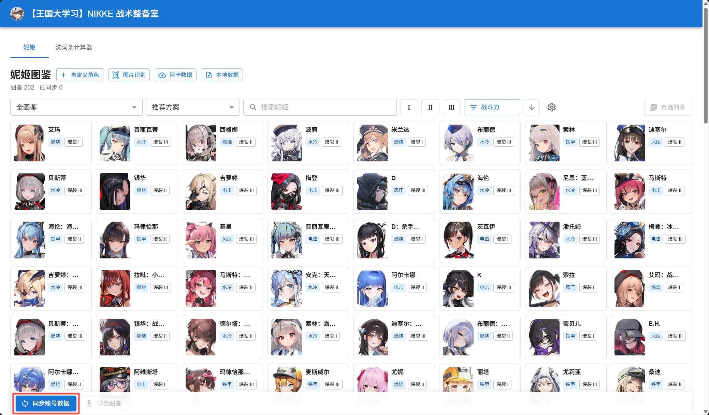
2. 同步完成提示
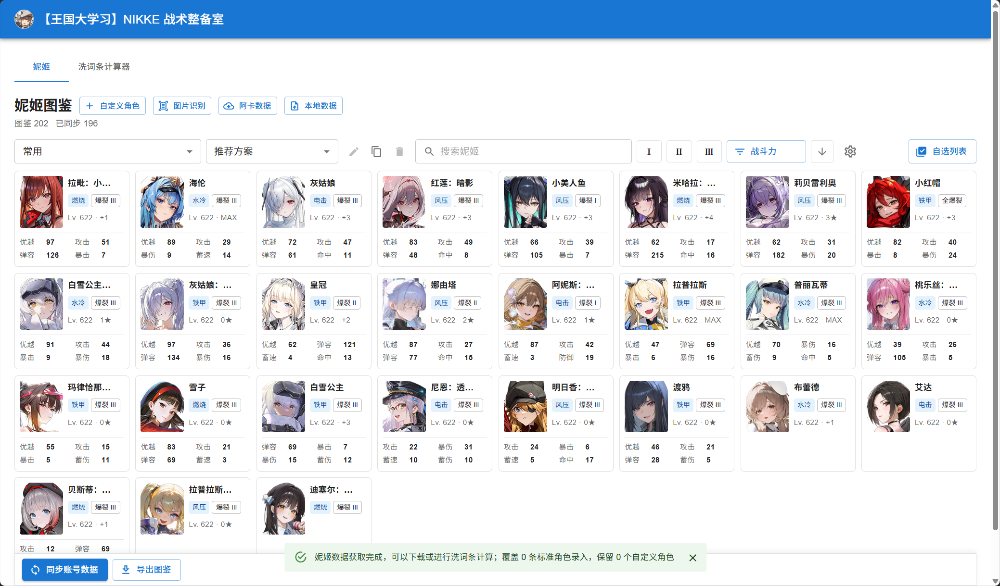
3. 切换主列表
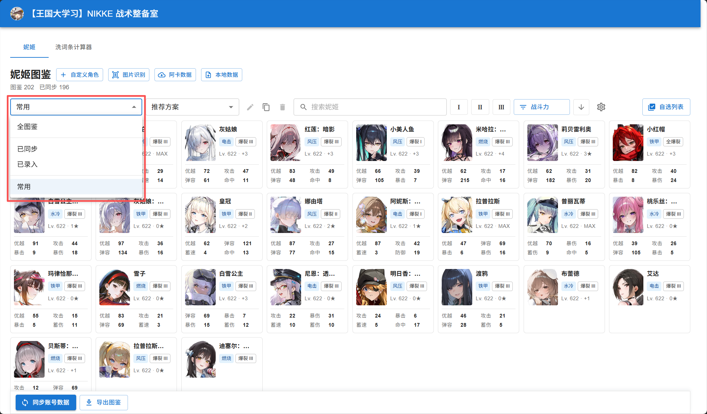
同步完成后切换到已同步列表 · 点击图片查看大图 按需再次同步
同步结果会保存在当前浏览器本地。角色等级、突破或装备变化后，再次同步即可读取新数据。
完成后：点击一位角色，可以检查角色数据、制作角色卡或进入洗词条计算器。
本地录入和同步发生在同一角色上时
同一标准角色以最后一次成功写入的数据为准；不同来源只更新各自支持的字段。同步失败或中断不会覆盖原有记录，自定义角色不会被账号同步覆盖。再次同步前，先保留需要留存的本地编辑。
图鉴与列表
用列表决定查看范围，再用搜索、筛选和推荐方案找到角色。
先选择查看范围
| 列表 | 用来做什么 |
|---|---|
| 全图鉴 | 查询当前收录的标准角色，包括未同步的角色。 |
| 已同步 | 查看从账号同步到本地的角色。 |
| 已录入 | 查看手动、图片识别、阿卡或本地 Excel 保存的数据。 |
| 常用 | 快速查看插件预设的常用角色。 |
| 自建列表 | 按个人用途整理已同步或已录入角色，包括自定义角色。 |
角色仅出现在“全图鉴”，不代表已经有账号练度数据。需要录入时，点击角色并切换到“角色数据”。
搜索、筛选与推荐方案
搜索框按角色名称查找；Ⅰ、Ⅱ、Ⅲ 按爆裂阶段筛选。筛选面板可组合职业、属性、武器和企业，排序按钮用于调整显示顺序。
“推荐方案”按推图、异常拦截、辅助、个突主 C、企业塔等场景分组，角色按录入的攻略顺序展示。
1. 推荐方案菜单
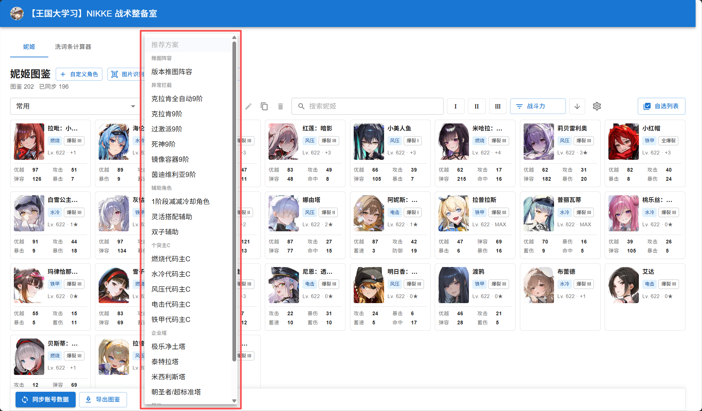
2. 搜索、排序与筛选面板
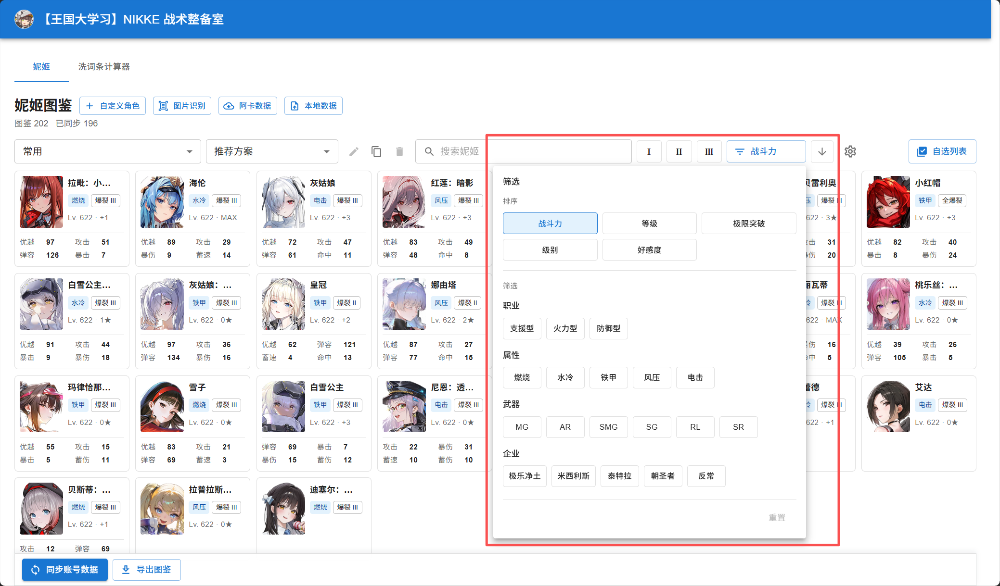
“400级属性”会改掉我的角色等级吗？
不会。它只决定同步数据中的模拟生命、攻击、防御是否按 400 级计算，不修改实际同步等级。
创建自选列表
选中角色
切换到“已同步”或“已录入”，点击“自选列表”进入多选状态，再勾选需要的妮姬。两类角色都能加入自建列表，包括已录入的自定义角色。仅在全图鉴中展示、尚未同步或录入的角色不可选。
保存列表
在底部选择加入已有列表，或点击“新建列表”填写名称。保存后，从主列表下拉框打开；列表旁的编辑、复制、删除入口用于后续管理。
1. 选择成员并点击新建列表
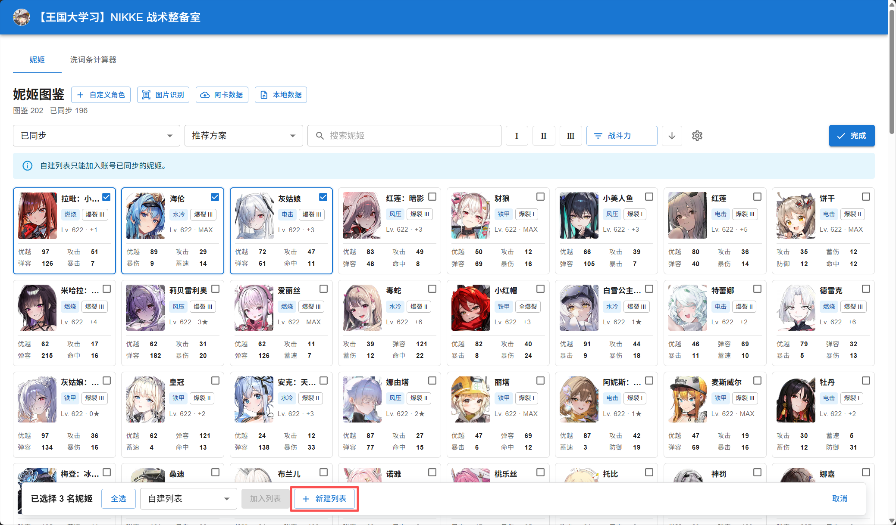
2. 填写列表名称
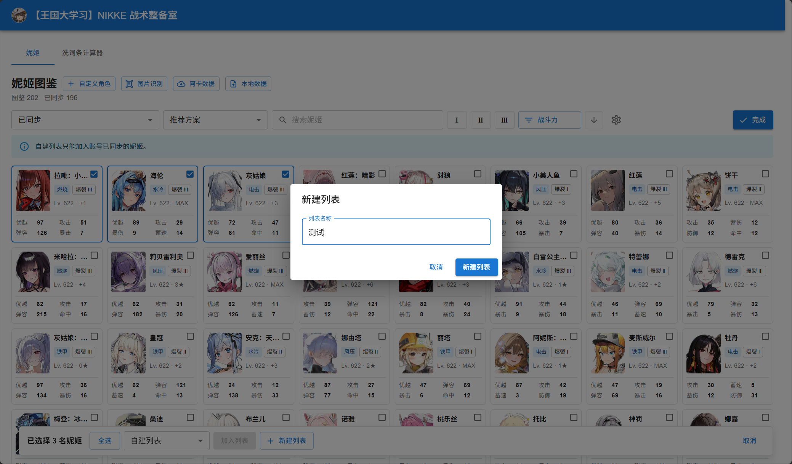
3. 创建后的列表
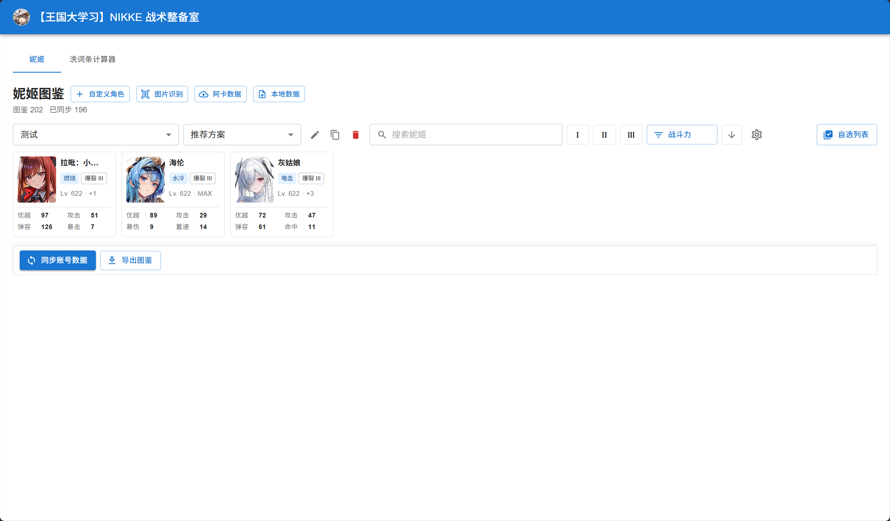
选择成员并创建自建列表 · 点击图片查看大图
需要保存当前列表的数据？前往本地图鉴导入与导出。
数据录入与截图识别
不依赖账号同步，也可以维护角色数据。先选择录入方式，再核对结果并保存。
选择数据来源
| 入口 | 适合的情况 |
|---|---|
| 标准角色 → 角色数据 | 已经在图鉴里，手动补充或修正一位角色。 |
| 自定义角色 | 当前图鉴里还没有，需要自行填写基础资料。 |
| 图片识别 | 已有游戏内装备或练度截图，需要批量录入。 |
| 阿卡数据 | 已有阿卡 API Key，希望读取国服或外服数据。 |
| 本地数据 | 恢复或导入此前导出的本地图鉴 Excel。 |
4.1 手动录入
打开角色数据页
在“全图鉴”中点击目标角色，切换到“角色数据”。标准角色的名称、属性等固定资料由图鉴提供；等级、战斗力等未知数值可以留空。
填写练度与装备
按游戏填写等级、突破、好感度、职业／企业等级、技能、魔方和收藏品信息。四件装备的词条按实际 1、2、3 号位置填写，没有的词条保持空位，不把后面的词条向前挪。
突破采用 0～10 的下拉选项。普通装备与 T10 分开显示；当前为非 OVERLOAD 装备时，不把它当成带超频词条的 T10。
编辑标准角色数据 · 点击图片查看大图 保存并检查
点击“保存”，回到“已录入”列表查看。需要计算时，使用工作区上方“洗词条”入口。
完成后：这位角色的数据可用于角色卡、本地图鉴导出和计算器。
4.2 自定义角色
点击“自定义角色”，填写名称，并选择属性、职业、爆裂阶段、企业、武器与稀有度，再按相同方式录入练度和装备。保存后显示“自定义”标记；以后账号同步不会覆盖该角色。
4.3 截图识别
准备截图文件夹
在安装目录的 screenshots 内，为每位角色建立一个子文件夹，名称使用图鉴中的完整角色名。将该角色的截图放进去；同一文件夹可以混放装备、技能、魔方和完整练度截图。
screenshots/
爱丽丝/
头部.png
技能.png
练度.png
麦斯威尔/
魔方.png在图片识别窗口中选择整个 screenshots 目录，至少保留一层角色文件夹。未匹配的文件夹会被跳过；可以改为完整角色名，或先创建同名自定义角色。
1. 按角色保存截图
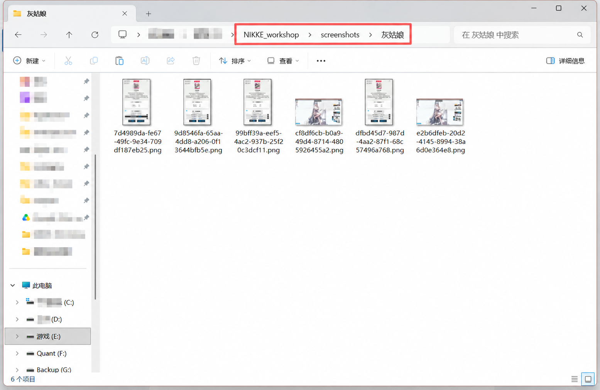
2. 装备截图示例
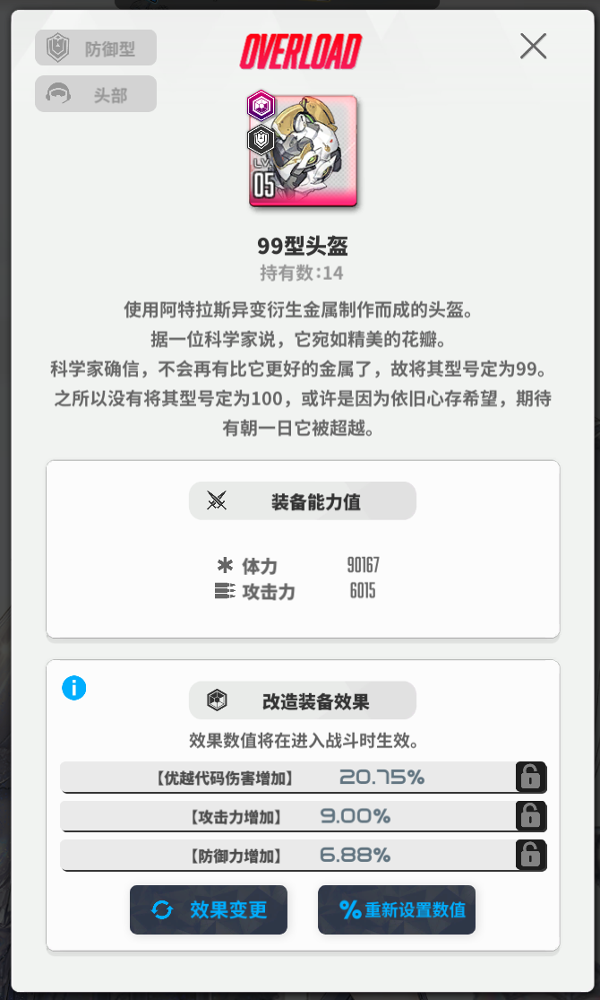
3. 练度截图示例：技能页
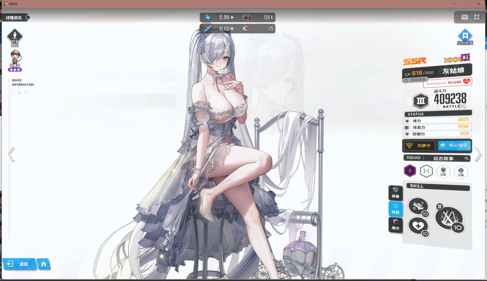
4. 练度截图示例：魔方页
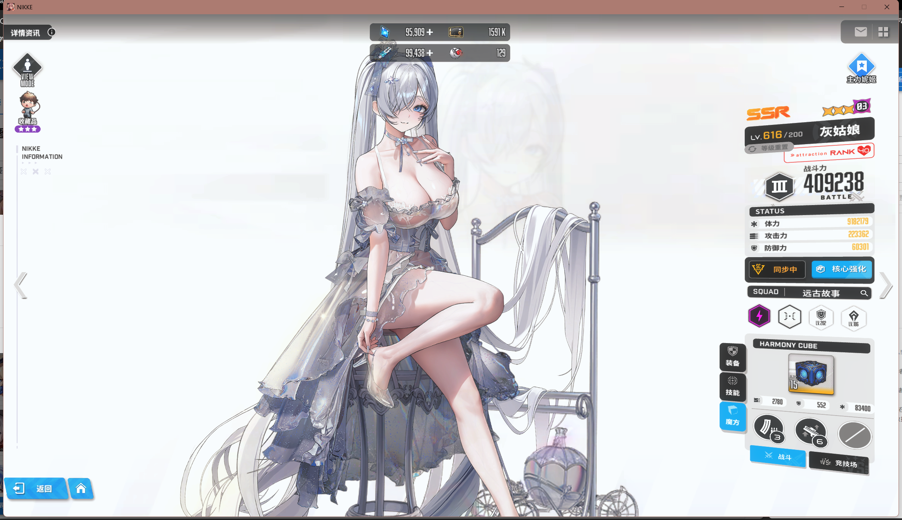
选择模式并开始识别
| 识别类型 | 适合的截图 |
|---|---|
| 智能识别（推荐） | 按图判断装备、技能、魔方或完整练度；适合混合目录。 |
| 装备截图 | OVERLOAD 装备详情，识别部位、三条词条、档位和锁定状态。 |
| 练度截图 | 完整或局部练度、技能与魔方；按可识别字段分别给出结果。 |
点击“图片识别” → 选择识别类型 → “选择截图目录” → “开始识别”。先查看发现的角色与图片数量，再等待结果。图片和识别模型都在本机处理。
1. 选择识别类型
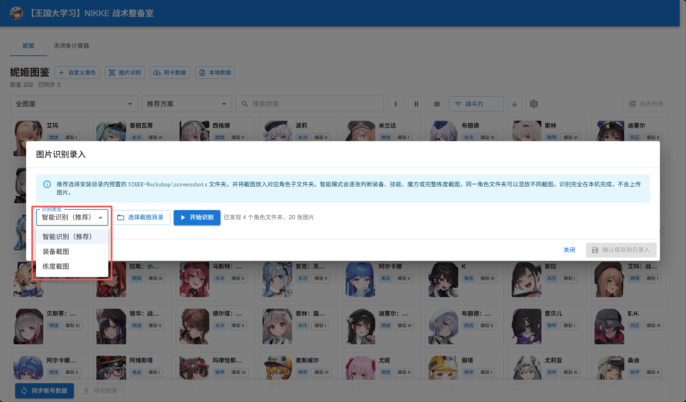
2. 选择含角色子文件夹的 screenshots 目录
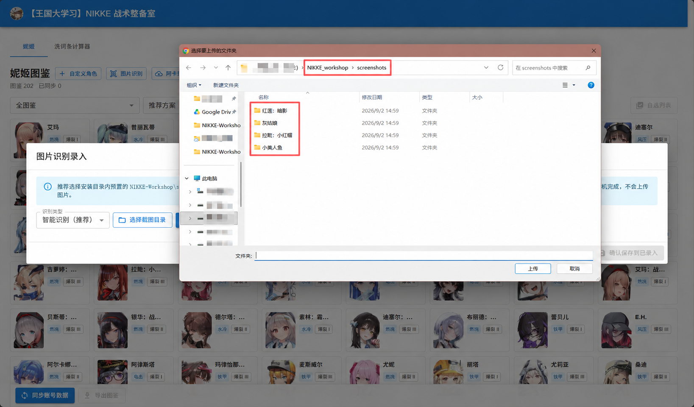
核对结果，再确认保存
核对装备截图
检查装备部位、三个固定词条位置、档位和“已锁”。识别不正确时直接修改；重复部位或不一致结果需先处理，避免把两张不同装备图保存到同一个位置。
核对装备识别结果 · 点击图片查看大图 核对练度字段
练度结果分别列出珍藏品、突破、角色等级、好感度、战斗力、职业／企业等级、技能 1、技能 2、爆裂技能、魔方及魔方等级。对照“原值 → 新值”，修改错误结果，或取消该字段的导入勾选。
“未定位”“待确认”“识别失败”不等于零。只保存成功确认且勾选的字段，其余保留原值；收藏品星级不会被自动换算成 R／SR 的精确等级。
核对练度字段并保存到已录入 · 点击图片查看大图 处理冲突或失败图片
不需要的图片取消“导入此图”。多图对同一字段给出冲突结果时，先修改或排除冲突；失败图片可“重试此图”，未知类型还可“按练度重试”或“按装备重试”。
保存到已录入
点击“确认保存到已录入”。保存成功后检查角色数据；保存失败时结果会保留，可以重试。取消识别只停止剩余任务，已完成的结果仍可检查与保存。
完成后：确认的数据进入“已录入”，并可供角色卡和计算器使用。
4.4 阿卡数据
准备 Key 并选择服务器
在阿卡中通过
#ApiKey获取 Key。点击“阿卡数据”，选择国服或外服，填写 Key。读取并检查预览
点击“读取角色数据”。首次读取会请求阿卡接口访问权限；确认读取意图后继续，核对匹配人数和未匹配角色。
选择服务器并读取阿卡数据 · 点击图片查看大图 确认导入
点击“确认导入”。突破、好感度、职业／企业等级和装备词条按阿卡数据更新；阿卡未提供的角色等级与战斗力保留，未匹配角色不导入。
4.5 本地图鉴 Excel
在任意列表底部点击“导出图鉴”，将当前列表中有实际数据的角色保存为 Excel。文件包含角色展示板块、装备效果总览、四部位明细和可往返的锁定状态。仅有内置名称或头像不算已录入数据，因此空列表的导出按钮会禁用。
恢复时点击顶部“本地数据”，选择此前由本插件“导出图鉴”生成的 Excel。目前仅支持本插件导出的图鉴 Excel，不支持任意 Excel 或计算器的洗词条结果表。文件在本地解析，完成后查看匹配、更新、新建和跳过的数量。
1. 选择插件导出的图鉴 Excel
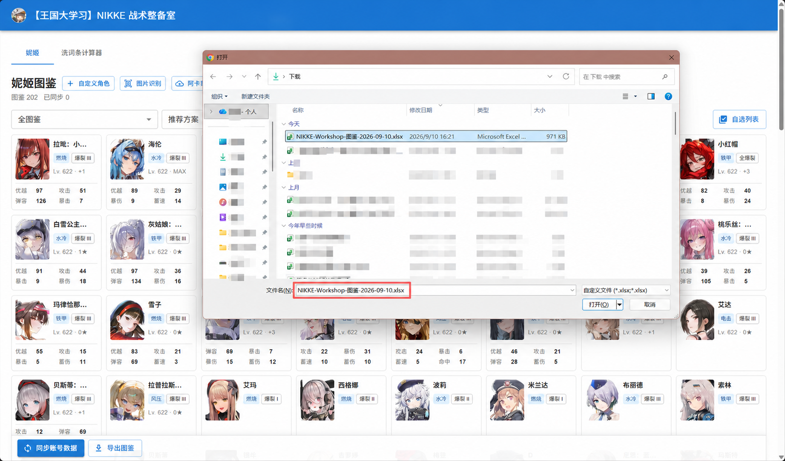
2. 图鉴导入完成统计
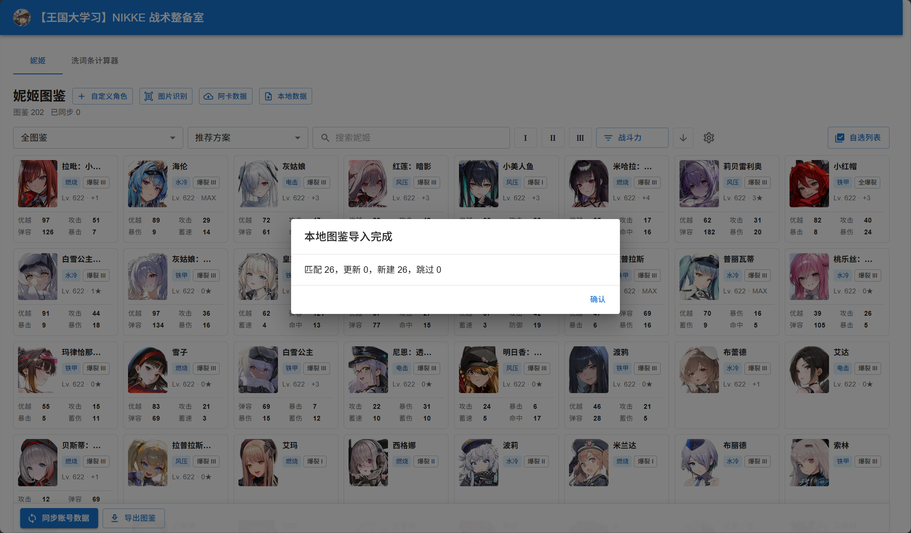
角色卡制作
选择背景、调整构图和显示内容，再生成可分享的角色卡。
打开角色卡
点击图鉴中的角色，打开统一角色工作区。“角色卡”展示当前数据，“角色数据”用于编辑；上方“洗词条”进入该角色的计算器。
缺失数值显示“—”，不表示实际为零。需要补数据时，先到“角色数据”填写并保存。
选择背景与调整构图
选择背景素材
点击“调整背景”，在“背景素材”中选择当前角色可用的默认立绘、皮肤、珍藏品背景或技能动画图。选项以该角色实际列表为准；技能动画选项使用静态画面，不播放视频。
移动与缩放
用方向按钮移动人物，使用缩放滑杆调整大小。“位置居中”用于重新对齐；恢复按钮将当前背景恢复为默认构图。
保留自己的构图
构图按角色与背景分别保存在本地，切换回来可继续使用。保存失败时按提示重试。
选择显示内容并下载
在“调整背景”的显示模块中，勾选希望保留的内容：收藏品、稀有度／突破、等级／名称、好感度、战斗力、属性图标、技能等级、魔方、词条合计、四件装备。选择按角色保存，同时作用于预览和下载图。
确认预览后点击“下载角色卡”，等待浏览器下载 角色名-角色卡.png。输出尺寸为 736 × 1096 像素；下载使用点击时的内容和构图，生成失败时可重试。
完成后：得到一张可分享的 PNG。分享前检查展示数据是否符合你的意愿。
读懂装备与词条汇总
角色卡支持已保存身份的 T1～T9 普通装备与 T10 装备。企业装备使用企业徽章，T10 保留改造徽章；未知装备不会强行套用 T10 图标。旧同步记录没有装备身份时，可重新同步一次。
角色卡的“词条合计”只展示汇总摘要。需要核对所有词条的完整合计，使用计算器的装备效果一览。
洗词条计算器
先用单装备完成一次计算，再按需要进入角色的四装备模式。
先完成一次单装备计算
这条路线不需要登录，也不需要先录入角色。下面只示范操作顺序；目标词条与档位请按自己的角色需求设置。
选择“单装备模拟”
打开“洗词条计算器”标签，在第一个下拉框选择“单装备模拟”。
填写当前盘面与目标词条池
对照游戏填写三个位置的词条、实际档位和“已锁”状态，空位保持“空词条”。本例盘面如下：
位置 当前词条 档位与数值 已锁 第 1 行 防御力增加 第 1 档 · 4.77% 不勾选 第 2 行 攻击力增加 第 15 档 · 14.63% 勾选 第 3 行 空词条 空 不勾选 在“目标词条池”中设置两项：优越代码伤害增加，第 10 档 22.15%；攻击力增加，第 10 档 11.11%。两项都勾选“必选”，其余目标保持“空词条”。本例不额外设置“强制保留”。
目标档位是最低要求：本例当前攻击力增加已达第 15 档，高于目标第 10 档，无需把当前盘面改成第 10 档。实际使用时按自己的装备填写，示例目标不代表所有角色的推荐配置。
填写单装备示例与目标池 · 点击图片查看大图 运行并阅读建议
点击“运行算法测试”，查看“最优结果”的下一步操作、停止条件和期望耗石。达到停止条件后再进入下一阶段。
1. 阶段结果概览
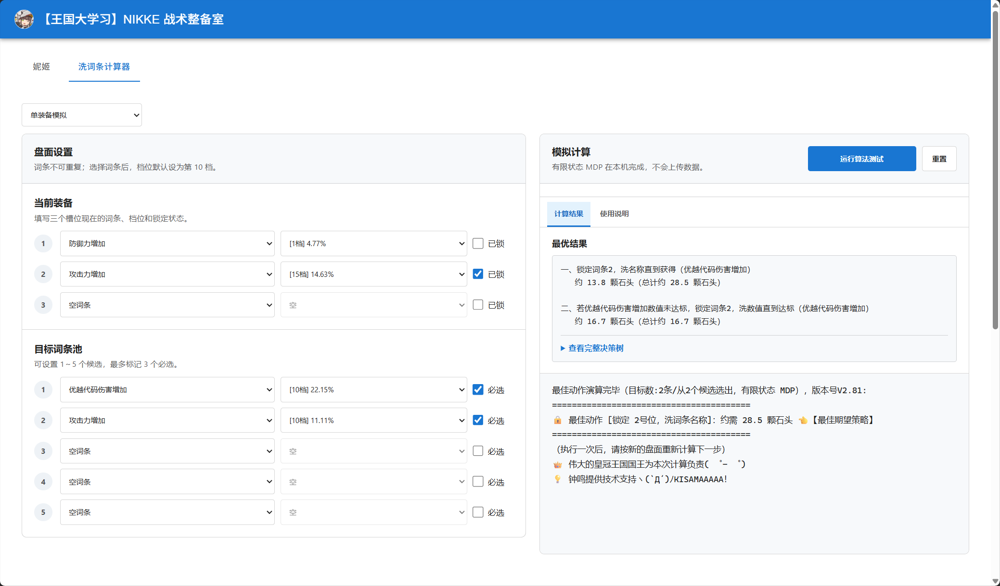
2. 展开完整决策树
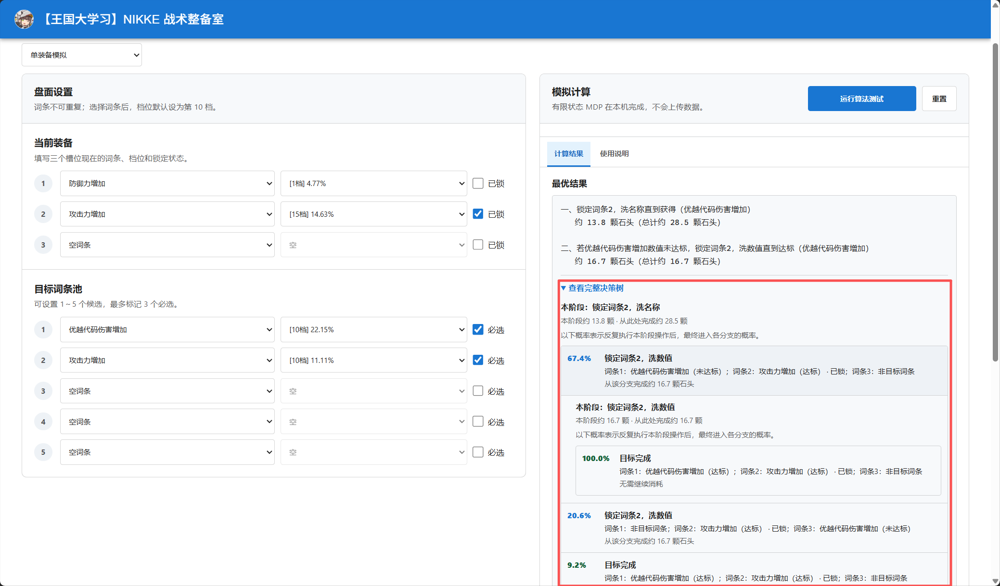
按阶段阅读最优结果 · 点击图片查看大图
完成后：可以读出当前该洗名称还是数值、保留哪些位置，以及何时切换操作。实际盘面或目标变化后重新计算。
理解盘面、锁定与目标池
| 设置 | 代表什么 |
|---|---|
| 已锁 | 游戏中该词条当前已锁定。同步后需手动对照，OCR 或本地记录的值也应核对。 |
| 强制保留 | 点击词条左侧圆形编号，变蓝后要求后续保留这条现有词条；再次点击取消。 |
| 必选 | 目标池中的该词条必须进入最终目标，最多 3 个。 |
| 最低档位 | 达到该档或更高即满足目标。选定目标词条时默认第 10 档。 |
当前每件装备和目标池都不能有重复词条。目标池可设 1～5 个候选：不超过 3 个时需要全部满足，超过 3 个时选取满足必选条件且期望成本最低的 3 个。强制保留的非目标词条会占用槽位，可能让目标无法同时成立。
怎样理解结果中的两个耗石数字
“约 X 颗石头”是完成当前阶段的期望成本；“总计约 Y 颗石头”是从该阶段开始直到全部目标完成的剩余期望成本。它们不能再相加。期望是平均意义上的成本，不是一次实际洗练的保证值。
若前一步已经完成目标，就不再执行后面的条件阶段。需要看其他随机结果时，展开“查看完整决策树”。
为一个角色计算四件装备
从已同步、已录入、自建列表或推荐方案选择具体妮姬，也可从角色工作区点击“洗词条”。核对头部、身躯、臂部、腿部的词条和锁定状态；培养建议存在时，可点击摘要查看详细建议。
| 模式 | 适用情况 | 如何设置 |
|---|---|---|
| 全局（角色默认） | 只关心四件装备合计有多少条、达到多少数值。 | 填写目标词条、至少条数、合计数值至少；最多 6 条不同条件。 |
| 独立 | 已经确定每件装备分别承担哪些目标。 | 为每件参与计算的装备设置自己的目标池，也可先用预设再调整。 |
不想洗的装备勾选“不跑”，其成本不计入本次总计；至少保留一件参与计算。运行后，在装备下方查看“算法分配目标”和“最优结果”。
1. 设置四装备全局目标
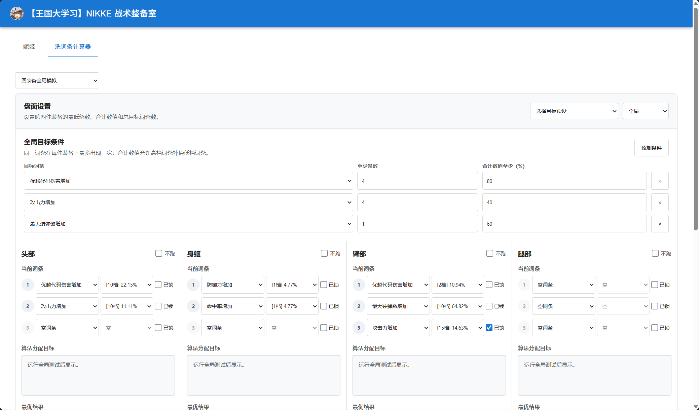
2. 分配目标与各装备结果
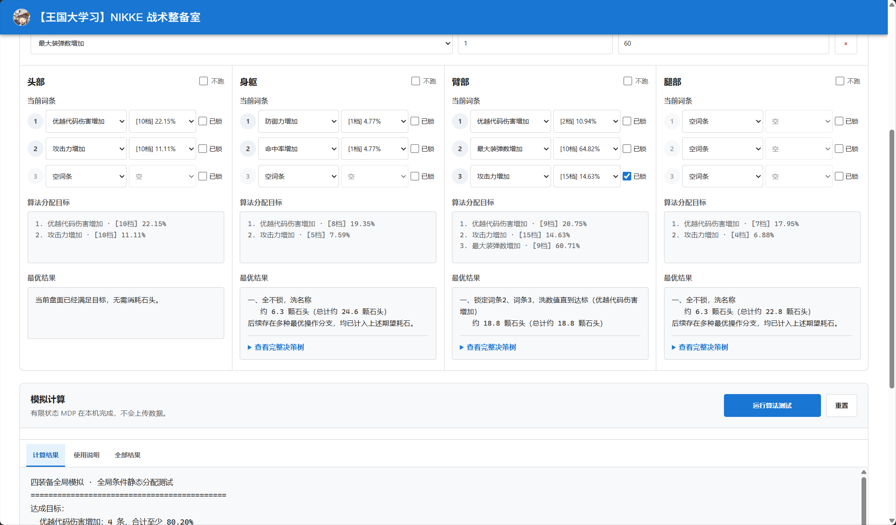
没有角色数据，也想试四件装备
选择“四装备全局模拟”，手动填写四件装备。该临时盘面不绑定角色，不会写入角色结果汇总。
全局与独立模式的预设
独立模式可使用“4优越4攻击”“4优越”“4攻击”。全局的 4优越4攻击预设包括顶级（110 优越／50 攻击）、毕业（100／45）、优秀（90／40）、出村（80／30）；先选接近需求的预设，再核对和调整目标。
查看装备效果一览
具体角色计算器中的“装备效果一览”汇总四件装备的词条效果。它用于核对当前数据的整体情况，不等同于目标条件，也不是角色完整战斗伤害计算。
保存与导出计算结果
具体角色成功计算后，会保存该角色最后一次模式、目标条件和结果；再次运行同一角色会更新这条记录。单装备与临时四装备模拟没有绑定角色，不会新增角色汇总。
在“全部结果”中检查记录
按时间或耗石数量排序，展开“查看最优结果”核对每件装备的建议。
下载 Excel
至少有一名角色的保存结果后，“下载 Excel”才会启用。结果表包含全体预计耗石、角色小计、当前词条、算法目标和建议；红色表示需要洗，绿色表示已满足，灰色表示本次不跑。
1. 全部结果与下载 Excel
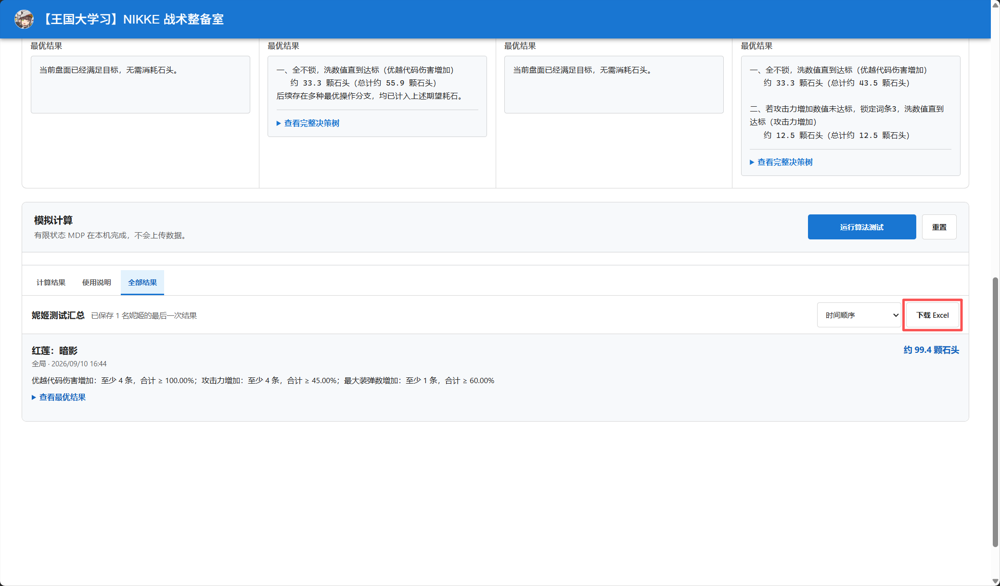
2. 计算结果 Excel 示例
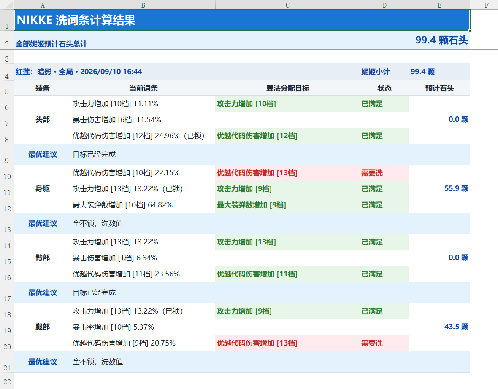
全部结果与 Excel 下载 · 点击图片查看大图
进阶：算法怎样计算期望
不需要模拟次数或随机种子。单装备使用有限状态 MDP，将当前盘面、锁定与目标组成状态，比较每种操作的当前成本和后续期望成本。计算在本机进行。
状态、动作、概率与收敛
- 状态：词条名称、档位、锁定与强制保留要求。
- 动作：洗名称、洗数值，以及锁定组合。
- 转移：动作可能产生的下一盘面及对应概率。
- 求解：通过 Bellman 迭代求各状态的动作与期望，界面再归纳成连续操作阶段。
“使用说明”页签保留状态数量、求解轮数和残差等信息，供需要时检查。模型使用完整离散概率求解，而非随机抽样；结果仍受模型假设与输入正确性约束。
全局模式的计算范围
全局模式搜索多组跨装备的静态目标分配，通过移动、交换、条数和档位调整改进候选，再用单装备 MDP 精确复核。在当前搜索预算内选择合计期望较低的方案；它不是四件装备全部随机分支的联合动态最优策略。
状态规模为什么会受限
单件装备组合超过 24,000 个状态时，会要求缩小目标池或调整保留条件，以避免浏览器长时间卡住。操作前请先排除重复词条、必选过多或槽位不足等输入问题。
常见问题
先看问题对应的处理方法，需要详细步骤时跳回相应章节。
账号与列表
Cookie 失效，或者同步提示区域错误
重新登录 Blablalink，返回侧栏“保存/更新 COOKIE”。核对服务器；只有自动区域识别失败时再填写 area_id。见登录步骤。
为什么同步后只看到“常用”？
主列表自动切换到了预设视图。选择“已同步”即可查看同步角色；还找不到角色时，检查搜索词和筛选条件。
“已录入”为空，或无法加入自选列表
识别出结果还不等于已保存，先检查是否完成“确认保存到已录入”。已同步或已录入角色都能加入自选列表，包括自定义角色。仅在全图鉴中展示、尚无同步或录入记录的角色不可选；本地录入不会自动变为已同步。
图片识别与保存
没有找到角色文件夹
选择包含角色子文件夹的 screenshots 根目录；角色文件夹使用图鉴完整名称。自定义角色先创建再识别。见目录示例。
截图分类错误，或只有部分字段识别成功
使用“按练度重试”“按装备重试”，或切换明确的识别类型。局部截图可能缺少定位线索；待确认字段请手动修正，无法判断时取消导入，保留原值。
确认保存按钮灰色，或提示结果冲突
检查至少勾选一张有效图片，并处理同一字段的不同结果、重复装备部位和不合法词条。正在识别或保存时按钮也会禁用。
保存失败后需要重新识别吗？
无需马上重跑。结果会保留，先按提示重试保存；取消识别后，已完成的结果仍可单独核对。
图片与导出
角色卡缺少数值或图片
“—”表示缺少数据，先检查角色数据是否已保存。缺图时确认完整安装包已解压；没有该角色背景时仍可使用其他显示模块。生成失败可重试，修改构图后需重新下载。
“导出图鉴”或“下载 Excel”按钮灰色
“导出图鉴”需要当前列表中有实际角色数据；计算器的“下载 Excel”需要至少一条绑定角色的成功结果。两种导出条件不同。
图鉴 Excel、结果 Excel 和角色卡 PNG 有什么区别？
图鉴 Excel 用于角色数据保存与再导入；结果 Excel 用于查看洗词条方案；PNG 用于分享角色卡。三者都不包含完整扩展设置备份。
更新与计算
点击打开更新器没有反应
先手动运行 Workshop-Updater.vbs，确认目录并启用插件唤起；也检查浏览器是否等待外部程序确认。移动文件夹后重新设置。见首次设置。
更新后仍显示旧版本
确认更新器选择的是浏览器实际加载的安装目录，再到扩展管理页重新加载并刷新插件。请勿通过卸载来刷新版本。
更新过程中断了
重新打开同一目录的更新器，按提示先“恢复未完成更新”。存在未完成事务时先恢复，再检查新版。
计算无法开始，或实际耗石与期望不同
先核对重复词条、目标数量、必选数量、保留槽位和“不跑”选择。期望不保证单次实际消耗；游戏盘面发生变化时更新输入并重新计算。见目标与结果说明。